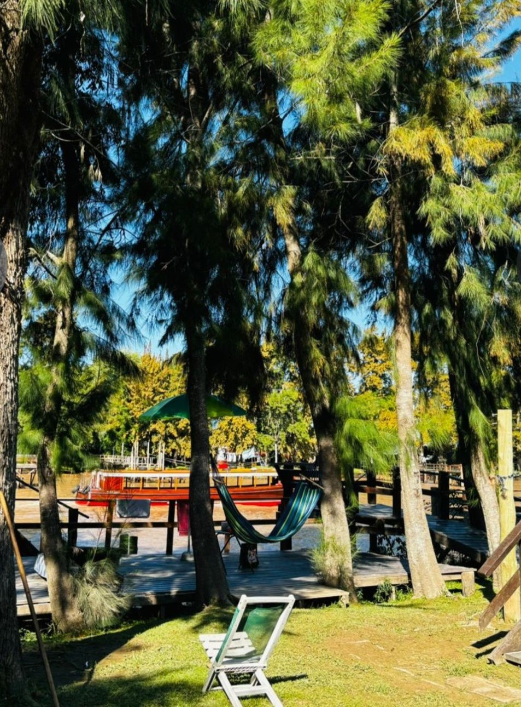
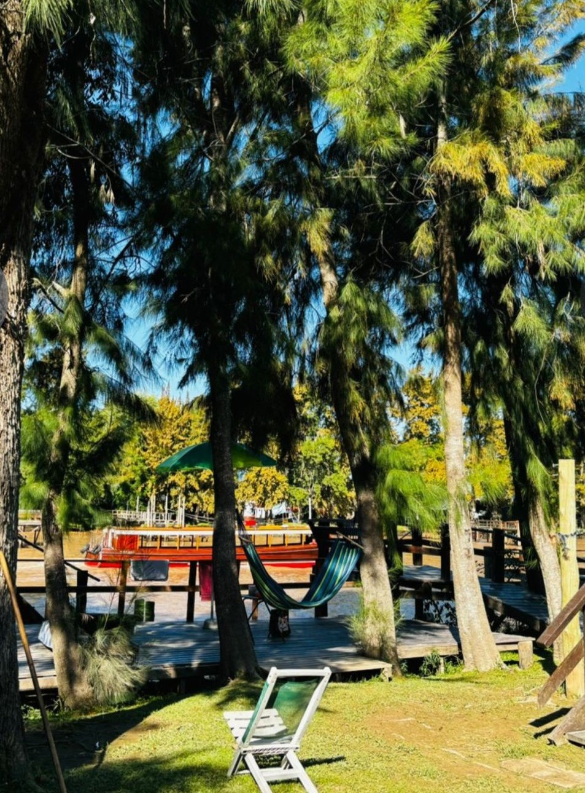

Cabaña en el Río Capitán-Delta Tigre
Nuestras cabañas están ubicadas directamente sobre el Río Capitán, uno de los canales más tranquilos y pintorescos del Delta del Tigre, en la provincia de Buenos Aires, Argentina. Se trata de una zona completamente natural, accesible solo por vía fluvial, ideal para desconectarse y disfrutar. Aquí no llegan los autos, ni el ruido de la ciudad: solo el canto de los pájaros, el movimiento suave del agua y el aire puro del entorno isleño
 

Cómo llegar
Sólo se accede en lancha colectiva:
A nuestra cabaña vas a poder llegar sólo via fluvial,a través del servicio de lancha colectiva "Interisleña". La misma, sale de la Estación fluvial ubicada en el Centro de Tigre, a pocos metros de la estación de tren y del Parque de la Costa.
Pasajes:
Los pasajes deben comprarse ida y vuelta, directamente en la boletería Interisleña, indicando que vas hacia "MUELLE LA PRADERA". Consultar previamente los horarios de salida de la Interisleña.
Importante: Su precio NO están incluidos dentro de nuestra tarifa.
Te recomendamos:
Tratar de venir con tiempo es lo aconsejable para poder comprar los pasajes, ya que la salida de lancha suele ser muy puntual. Podes dejar el auto en cualquiera de los estacionamientos cercanos a la estación fluvial.
Si llevás mucho equipaje, tené en cuenta que deberás cargarlo en la lancha y caminar desde el muelle hacia la cabaña.En días de lluvia suele haber demoras en los servicios fluviales, y crecidas del río. Además el muelle no es techado en caso de querer utilizarlo.
Opciones de Comida para tu estadía
Podes llevar tus provisiones o mercaderia favorita de tu casa, pero eso incluye más equipaje a mano para llevar. También se dispone de una Lancha Almacenera que pasa 2 veces al día por todos los muelles. Envíanos un WhatsApp para hacer tu pedido
Además se cuenta con Restaurante dentro de la isla: te enviamos la carta y pedis lo que necesitas. Pagas por Mercado Pago y te lo enviamos al muelle.
Por último, tambien se cuenta con Delivery de Almacenes: Pedis por whatssap y nuestros almacenes asociados te traen la compra al muelle.
Estos servicios son a tu cargo, no se incluye dentro de nuestra tarifa.